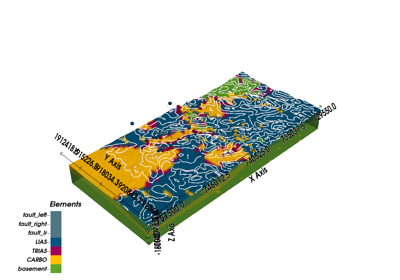

gempy.modify_surface_points¶
- gempy.modify_surface_points(geo_model: GeoModel, slice: int | slice | None = None, elements_names: Sequence[str] | None = None, **surface_points_field: float | ndarray) StructuralFrame[source]¶
Modifies specified fields of all surface points in the structural frame. The keys of the surface_points_field dictionary should match the field names in the surface points (e.g., “X”, “Y”, “Z”, “nugget”).
- Parameters:
geo_model (GeoModel) – The GeoModel instance to modify.
slice (Optional[Union[int, slice]]) – The slice of surface points to modify. If None, all surface points will be modified.
- Keyword Arguments:
X (Union[float, np.ndarray]) – X coordinates of the surface points.
Y (Union[float, np.ndarray]) – Y coordinates of the surface points.
Z (Union[float, np.ndarray]) – Z coordinates of the surface points.
nugget (Union[float, np.ndarray]) – Nugget value of the surface points.
- Returns:
The modified structural frame.
- Return type:
Examples using gempy.modify_surface_points¶

Model of Ales, France: Plotting Sections and Maps
Model of Ales, France: Plotting Sections and Maps